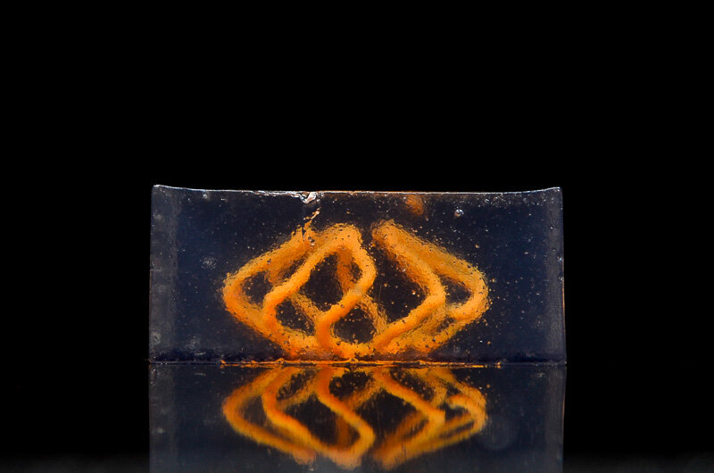
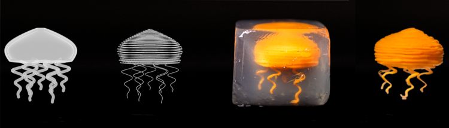
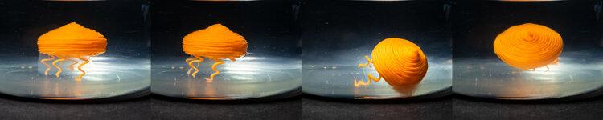
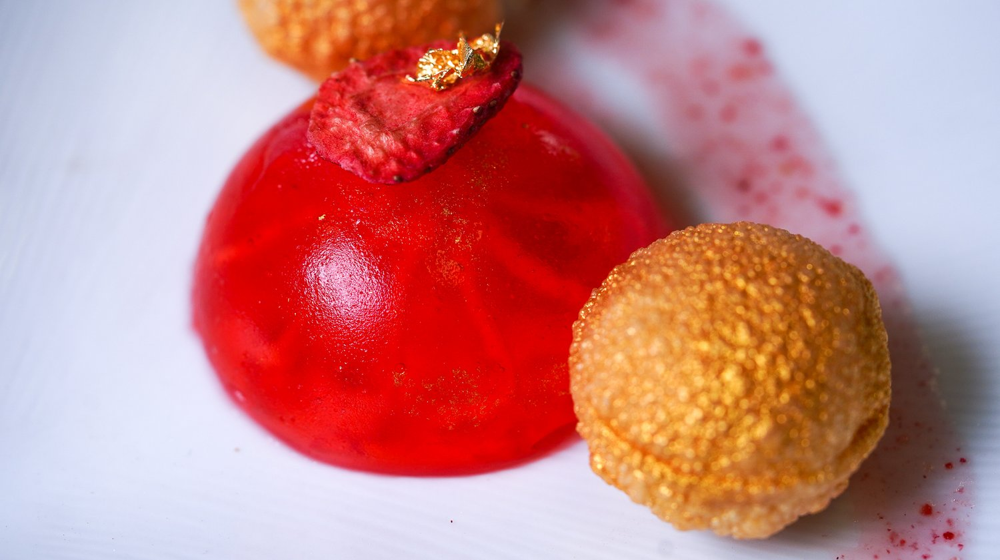
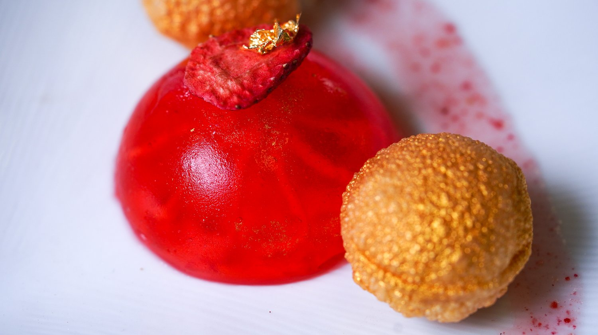

Abstract
From providing nutrition to facilitating social exchanges, food plays an essential role in our daily lives and cultures. In this work, we seek to expand this design space by adapting support bath-assisted printing to the food context. The bath scaffolds the embedded materials and preserves shapes during the printing processes, enabling us to create freeform food with fluid-like materials. We provide users guidelines for choosing the appropriate support bath type and processing methods depending on the printing material's properties. A design tool suite and application examples, including confectionery arts, 4D printed food, and edible displays are also offered to demonstrate the enabled interaction design space.
Many desserts uses gelatin (jelly) as one of the main ingredients, and their making process involves the finesse and craftsmanship of the chef. In this design example, using computationally controlled embedded printing enlarges the shape-design space of sweets and allows hobbyist makers to design and make personalized dishes in their kitchens. We showed jelly printed with an alginate-carrot ink.



In addition to the issue associated with the melted chocolate's fluidity, when printing shapes that are inherently 3D, such as the objects shown below, conventional layer-by-layer direction extrusion techniques and slicers would also be unable to capture the smoothness of the model. By contrast, using the Carbopol support bath and our design tools suite (polycurve-to-toolpath function) allows us to create freeform structures with ease and broadens the geometrical design space of 3D chocolate printing.
Dough, made of flour and liquid (e.g., milk, water), is an exemplary food material that may have a wide range of properties, viscosities, and design spaces depending on the ratio between its ingredients. For instance, dough with low water content is viscous and can be easily modeled into 2.5D shapes for baking cookies or bread, while dough with high water content is more fluidic and deformable and is widely used for making puffable flat food like pizza. As a result of this difference in fluidity, current 3D printing techniques are mostly limited to using low-hydration dough for making foods. In this work, we use dough with different water content levels for validating fluidic material printing. Its ingredients are also standardized, accessible, and common products, making it an ideal model material of liquid foods.
We conducted a co-design workshop with Shelby Costo, a pastry chef who lives and runs her independent business in Ohio. Our goal is to understand how the tool can support her creative practice. All the artifacts shown below are edible, with flavors and ingredients suggested by the chef, printed by our embedded printing process.
Strawberry Jello
The red ball (casted): Freeze-dried strawberries, water, honey, lemon juice, gelatin powder
Sauce (embedded printed): Freeze-dried strawberries, granulated sugar, vanilla extract, salt, corn starch.
 

Chocolate Mousse
Coconut Milk, separate cream from water, Cocoa powder, powdered sugar, embedded printed chocolate sculpture, gold leaf
Bibtex
@inproceedings{yang2021freeform,
title={Freeform fabrication of fluidic edible materials},
author={Yang, Humphrey and Luo, Danli and Qian, Kuanren and Yao, Lining},
booktitle={Proceedings of the 2021 CHI Conference on Human Factors in Computing Systems},
pages={1--10},
year={2021}
}